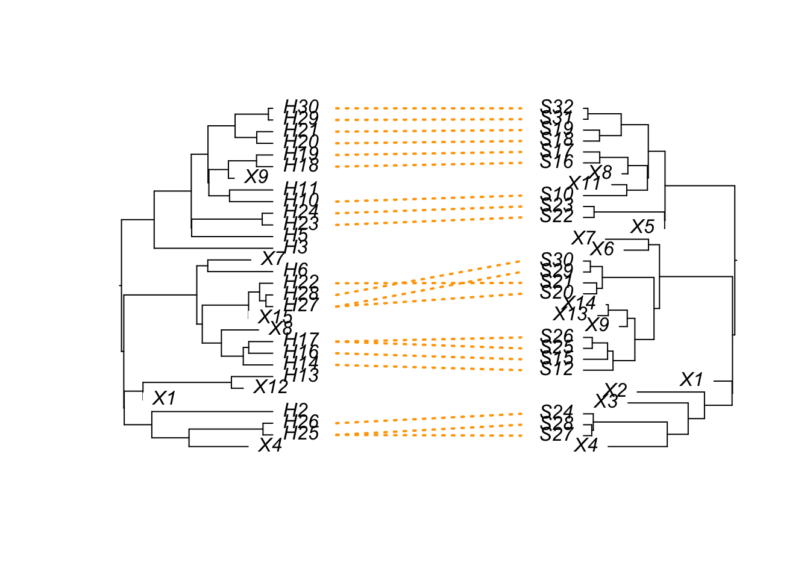

# For R/4.4.0}
# install.packages("htmlwidgets")
# install.packages("devtools")
library(devtools)Loading required package: usethis# install_version("apTreeshape", version = "1.5-0.1")
library(apTreeshape)Loading required package: apeRegistered S3 method overwritten by 'apTreeshape':
method from
is.binary.phylo ape
Attaching package: 'apTreeshape'The following object is masked from 'package:ape':
is.binary.phylo# install_version("treeducken", version = "1.1.0")
library(treeducken)
library(phytools)Loading required package: mapsset.seed(54)
# host speciation
lambda_H <- rexp(n=1)
# host extinction fraction
mu_H <- 0.3
# cospeciation
lambda_C <- rexp(n=1)
# time
time <- 2
# symbiont speciation
lambda_S <- rexp(n=1)
# symbiont extinction fraction
mu_S <- 0.3
lambda_total_H <- lambda_H + lambda_C
lambda_total_S <- lambda_S + lambda_C
# calculate the expected number of tips for the host and symbiont trees
H_tips <- ave_tips_st(lambda = lambda_total_H, mu = mu_H, t = time)
S_tips <- ave_tips_st(lambda = lambda_total_S, mu = mu_S, t = time)
cophy_obj <- sim_cophyBD(hbr = lambda_H,
hdr = mu_H,
sbr = lambda_S,
sdr = mu_S,
cosp_rate =lambda_C,
host_exp_rate = 0.0,
time_to_sim = time,
numbsim = 1)
# visualization using treeDucken, with imperfections
plot.cophy(cophy_obj[[1]], col = "orange", lty = "dotted", lwd = 2)